Lab 1: Orientation and Navigation
Part 1: Creating Favorites
Many, if not all of the features you will be using will be located under the “Clinical Asset Management” and “Clinical Asset Management Admin” modules. For ease of navigation, we will show you how to favorite and pin those lists, so you always have easy access.
- Login to Nuvolo using the following website:
- vaoititest.servicenowservices.com
- When prompted, select your VA.gov account to sign in
- Upon login, confirm you see the following banner at the top of your screen (it may be pink or yellow):

- Select the Profile Icon in the top right corner of your browser 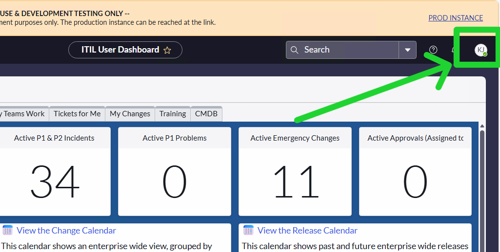
- Confirm you see the following list (it should have your name, not Kevin Jeter): 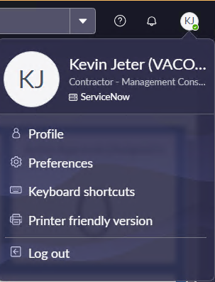
- Select “Profile” 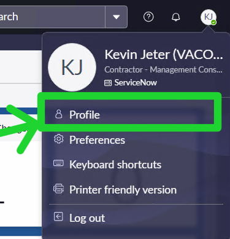
- Once you have selected “Profile” you can confirm all of your information is accurate 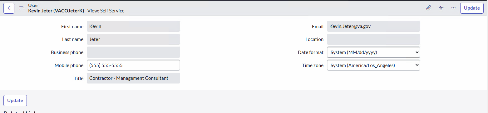
- Now click on your Profile Icon again
- Select "Preferences" from the dropdown list 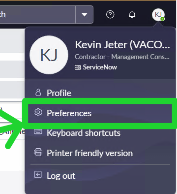
- Once you have selected “Preferences” you can adjust user setting to your preferences and desires 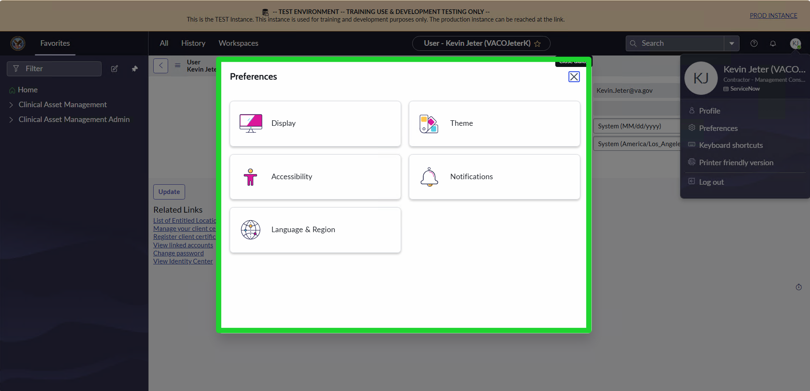
Part 2: Setting up Your Ward
When work orders are dynamically assigned, it is based on your Ward. We'll need to make sure this is updated and accurate.
- Navigate to yourHTM at https://yourHTM.va.gov/htm

Part 3: Setting Up & Personalizing your Favorites
Let's navigate back to our Nuvolo interface and get things set-up for day-to-day work.
We will also show you how to edit your Favorites Bar to make it more personalized and easier to use.
- At the top left corner of your browser, select “All” 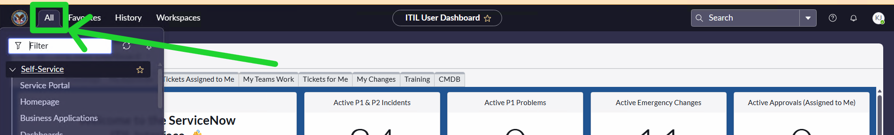
- In the dropdown list, type in “Clinical Asset Management” into your Filter bar If you are taking the Nuvolo Manager Training, you should repeat these steps for “Clinical Asset Management Admin”: 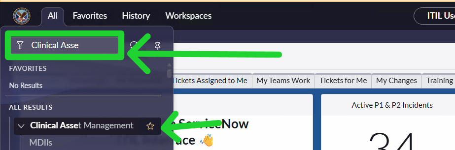
- Hover your mouse over “Clinical Asset Management”
- Click the star icon to the right of “Clinical Asset Management." Select "Done": 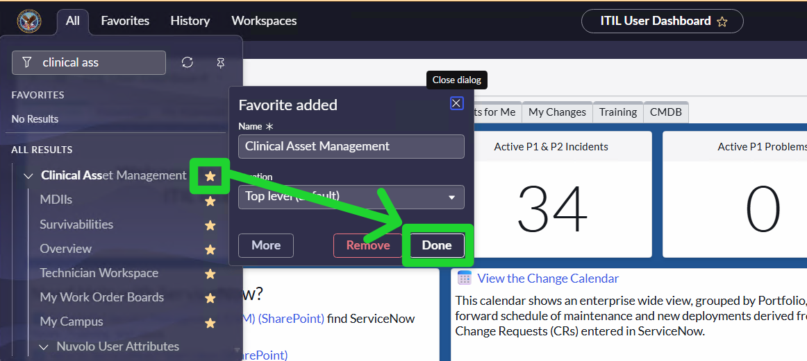
- At the top left corner of your browser, select "Favorites"
- Confirm your “Favorites” menu contains “Clinical Asset Management” 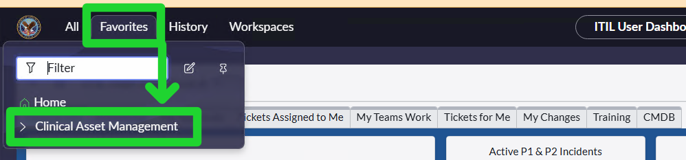
- Select the pin icon to pin your Favorites bar 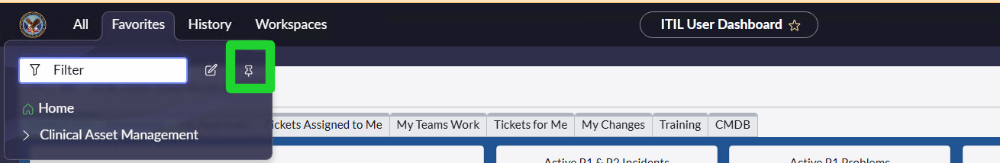
- Reference your Favorites Bar and expand “Clinical Asset Management” by clicking on the arrow on the left side of its name 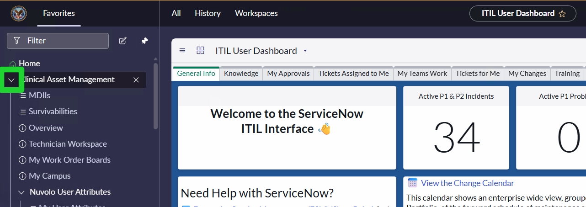
- We don't need all of the items in Clinical Asset Management. Let's practice removing a favorite. Frist, scroll down the list until you see “Emergency Events & Contacts”
- Hover your mouse over the name "Emergency Events & Contacts" and click the "X" to remove it from your Favorites Bar. 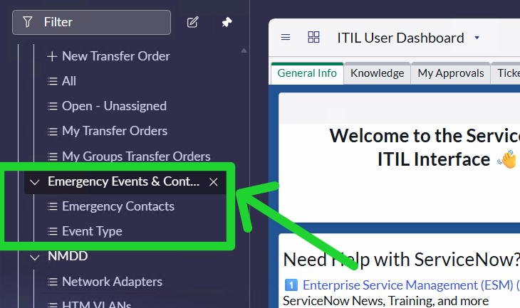
- You will see the following pop up, click "Remove" to confirm the removal from your Favorites Bar. 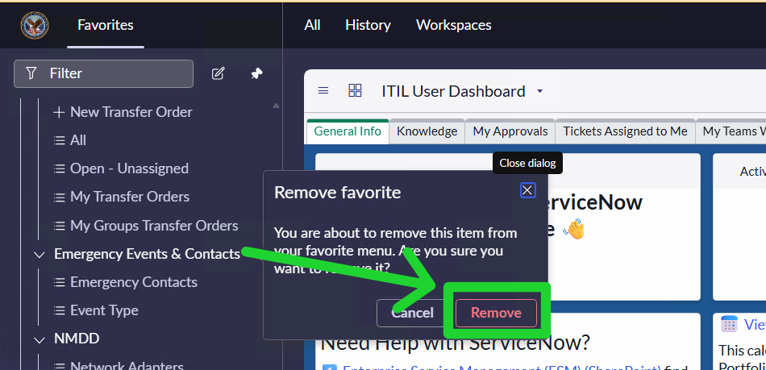
- That module will no longer be found in your Favorites Bar. If you ever need to reference it, you can find it in the "All" Bar.
- We can clean up our Favoites bar in a more efficient way. Click the pencil and notepad icon at the top of your Favorites Bar to edit your favorites. 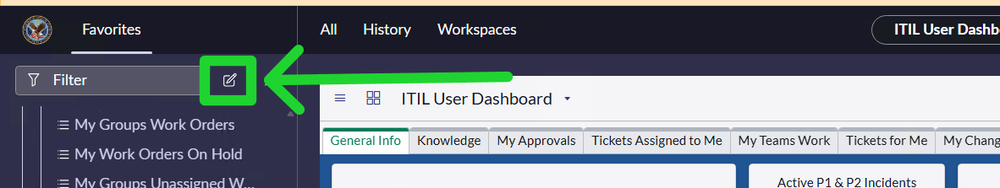
- Here we can customize icon, color, and remove favorites much more efficiently. Press the small "x"s to quickly remove the following items from your Favorites Bar:
-
a. External Companies
b. Transfer Orders
c. Purchase Requisitions
d. Contracts
e. Surveys
f. Knowledge
g. Work Projects
Part 4: Tools and Shortcuts
We've covered how to navigate Nuvolo, access your preferences, view your profile, customize your Favorites, and navigate between pages. Now we want to make sure you can quickly and efficiently use Nuvolo. This part will focus on some tips and tricks to ensure that you are maximizing your time while using Nuvolo.
- First and foremost, let's use the Search Bar. We'll start with the Favorites Search Bar. Type "Work Order" into your Favorites Search Bar.
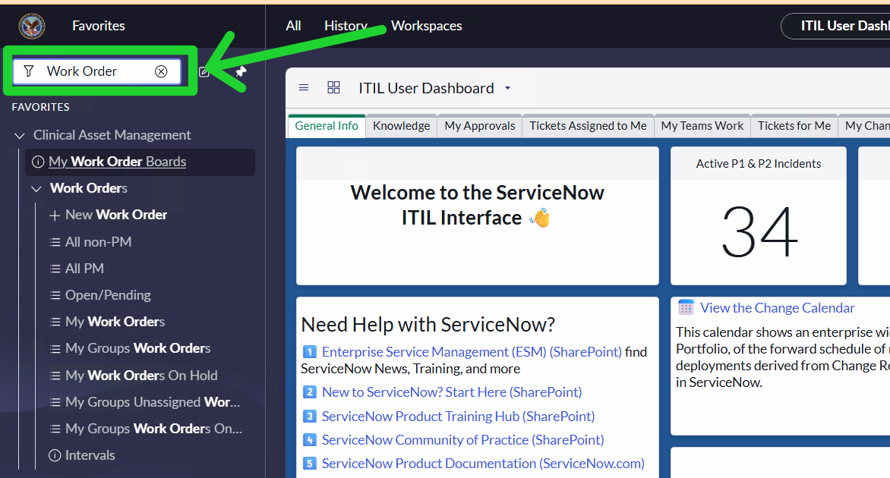
- NOTE: when using the Favorites Search Bar, you will only see menu items that have been added to your Favorites
- Let's use the All-Purpose Search Bar (the Search Bar that doesn't limit you to only Favorites). Click on “All” at the top of your browser and type “Promo Codes”
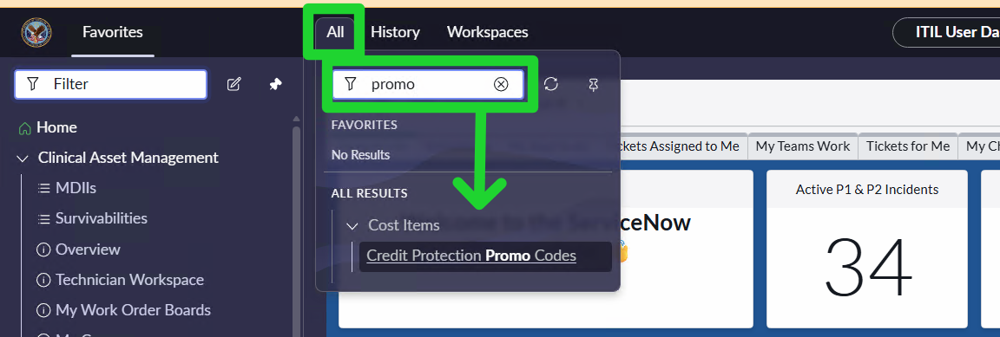
- Notice how “Cost Items” was not saved to your Favorites, but you were still able to find it. This All-Purpose Search Bar will allow you to find any menu item or feature even if it has not been saved to your Favorites.
- Another extremely useful feature is “History.” At the top of your browser, click on “History.” Confirm you can see the history of pages you’ve visited in Nuvolo, similar to 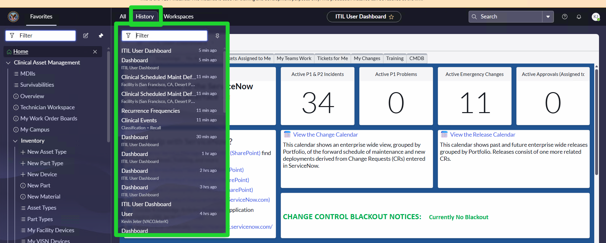
- This feature is extremely helpful if you find yourself frequently visiting the same page, Work Order, etc.
- NOTE: History will look different for each user – it is based on personal navigation history within Nuvolo
- NOTE: USE THE HISTORY TAB INSTEAD OF THE BACK BUTTON. Nuvolo doesn't work well if you use the browser back button.
- My approvals
- Tickets assigned to me
- My team's work
- Tickets for me
Okay great, now you've established some easy-to-use shortcuts that will help your navigation with Nuvolo. Next, we want you to use those shortcuts to navigate and answer the following questions. As you complete the next part of the lab, keep in mind that there are typically multiple ways to find something within Nuvolo. For each questions, part of your answer will be HOW you found your answer. Don't forget about features like History, Recent, Favorites, Search Bars, dropdown lists, Dashboards, etc.
Part 5: Scavenger Hunt
Okay great, so now you’ve followed along as we introduced you to your profile, your preferences, dashboards, your favorites bar, and the most important list you will be using: Clinical Asset Management. Next, I want you to use what you know and your current favorites bar setup to explore Nuvolo and find some features. Answer the questions below by navigating around the site and exploring. Don’t be afraid to ask questions!
- What are the 4 available options to select under the “Safety & Recall Alerts” list?
- On what tab can you see upcoming and assigned PMs?
- What are the first 5 value columns within “My Work Orders”?
- Where can you go to change your time zone?
- Where can you see a list of all dashboards?
- Under “Favorites,” where does “Home” take you?
- Change one of your Favorites to the color purple.
Lab 2: Work Orders and Documentation
Part 1: Introduction to Work Orders
Now that you have some familiarity with Nuvolo and its User Interface, we can move on to one of the most utilized aspects of the system: Work Orders. Work Orders in Nuvolo serve as the central mechanism for tracking, managing, and documenting maintenance activities on medical equipment. Whether it’s scheduled preventive maintenance (PM), corrective repair, or incoming inspection, each task is initiated and recorded through a work order. Nuvolo provides a standardized digital platform, integrated with the VA’s ServiceNow system, that helps biomedical engineers and technicians capture essential details such as equipment ID, location, service dates, labor time, and parts used. This ensures regulatory compliance, accurate performance metrics, and consistent communication across facilities. In short, work orders in Nuvolo are the backbone of the VA’s equipment lifecycle management, ensuring safe, reliable operation of medical devices across the healthcare system.
- Reference your pinned Favorites Bar on the left-hand side of your browser and expand "Clinical Asset Management" if it is not already expanded 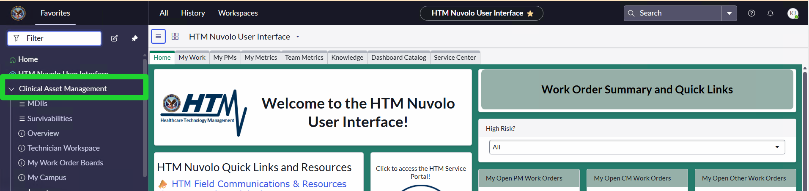
- Scroll down the list until you see “Work Orders” and expand the list (there may be two, select the second one if that is the case)

As you can see in this sub-list, you are able to handle all Work Order matters within this list. You have the ability to view all PM and non-PM Work Orders, view Open/Pending Work Orders, view specific Work Orders assigned to you, and view Work Orders assigned to your group. Additionally, you have the ability to create a new Work Order.
Part 2: Creating a New Work Order
Now we will dive into the steps that you need to take to create a Work Order. We will only be highlighting the most important or required portions of the Work Order you will need to complete. However, when going through the lab, please take the time to complete all of the fields within the Work Order form. It will help your confidence in using the system and provide more detailed Work Orders in the future!
- Select “New Work Order” 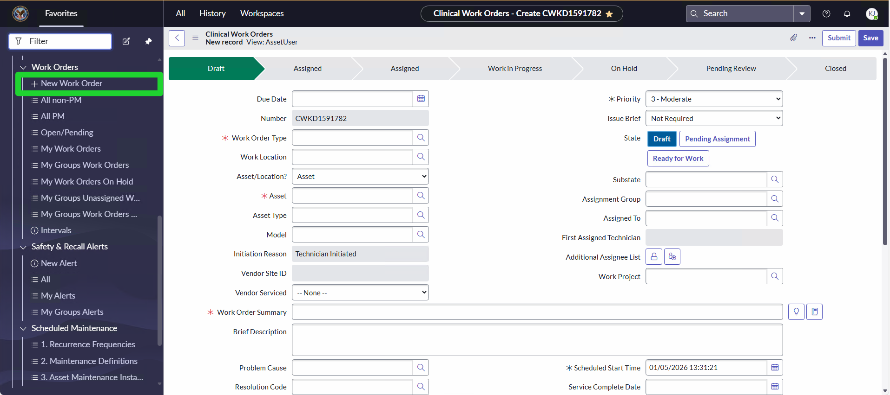
- Let's familiarize ourselves with some of the required fields within a Work Order
- Select a Work Order Type using the magnifying glass icon 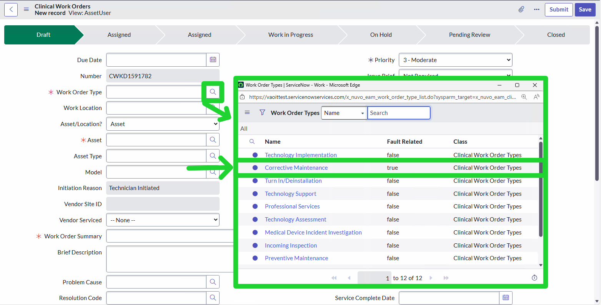
- Select an Asset using the magnifying glass icon 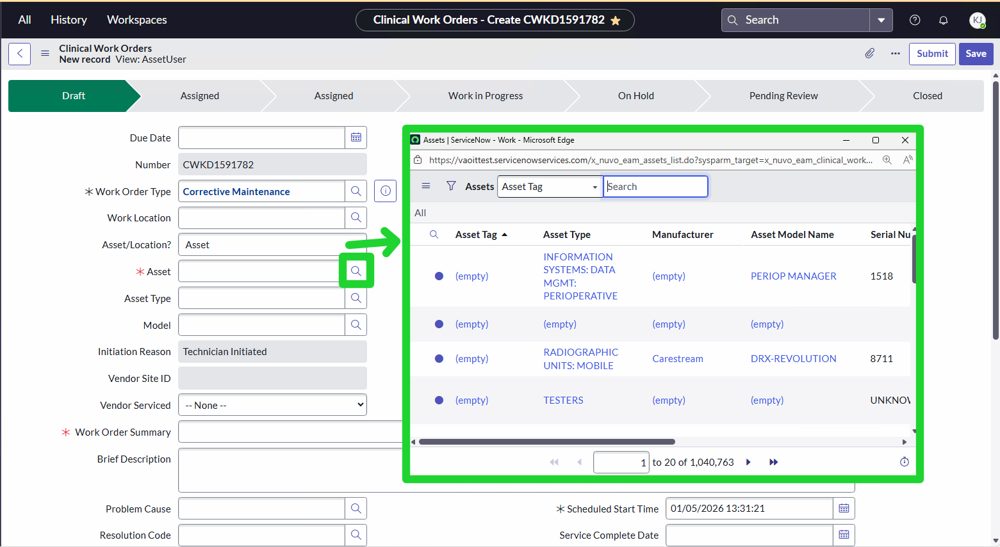
- Select and Asset Type using the magnifying glass icon 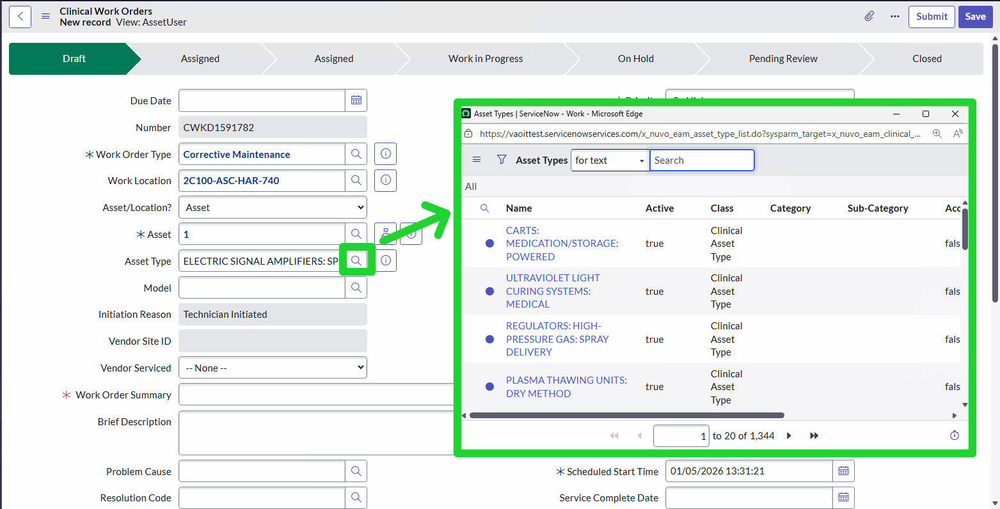
- Select a Priority level 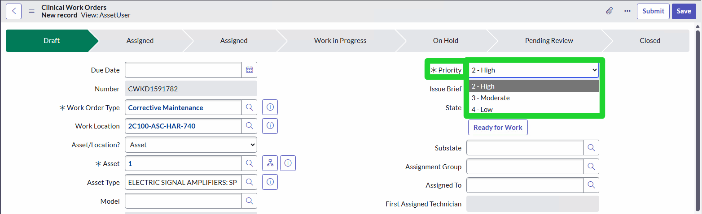
- Write a brief Work Order Summary 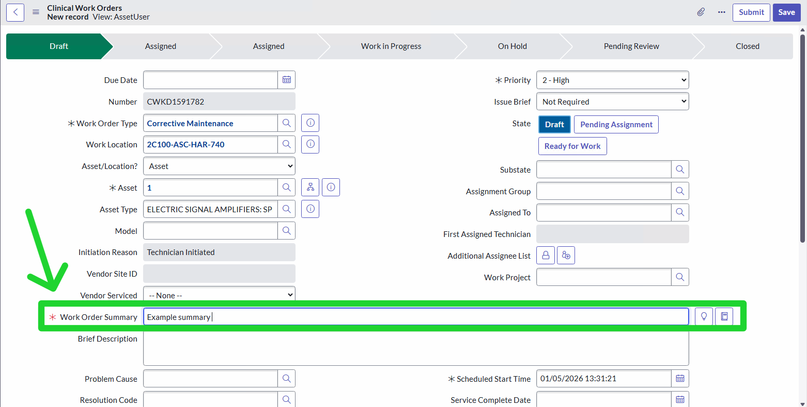
These are the required fields that you must complete prior to moving to the next step of the Work Order. With that in mind, let's dive in and write an entire Work Order. Provide as much detail as possible – the expectation is that you fill out every field, not just the required ones. The extra detail is crucial for proper documentation.
Part 3: Create Your Own Work Order
- Create your own work order. This Work Order is completely hypothetical! Have fun with it, and use it as an opportunity to familiarize yourself with the Work Order Document. Document the following information and be prepared to share with the class:
- Due Date
- Number
- Work Order Type
- Asset – should be asset-based workorder
- Show the magnifying glass next to the “Asset” so they can filter things down
- Asset Type – this auto populates when you select the asset!
- Priority
- Work Order Summary
- Brief Description
- Next, the Work Order needs to be assigned to a technician. Select “Pending Assignment” once all of your Work Order fields are complete
- If you double-click on the “Ready for Work”, it automatically moves it to the next state and saves
- Once the new page has loaded, explore the page and find the text field labeled “Assigned To.” Using this text field, assign yourself as the technician for this Work Order.
- Once you have assigned yourself as the technician, select “Ready for Work”
- Now select “Save” 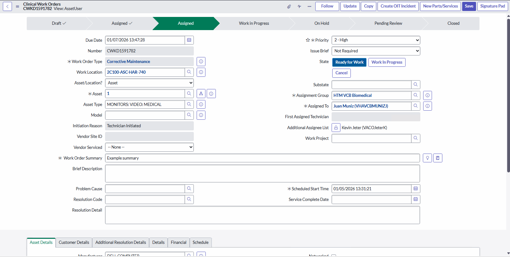
Congratulations! You have just created your first Nuvolo Work Order and assigned a technician to perform the work. You might be thinking, “Great, but where can someone go to view the Work Order that was just created?” Well today is your luck day – now we are going to explore how to view an open/existing work order!
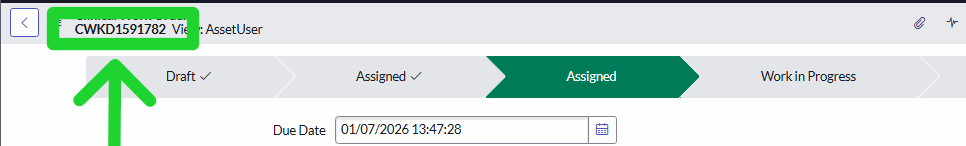
Part 4: Viewing an Open Work Order
- Have the documentation easily available from the Work Order you just created, namely, the following:
- Number
- Assigned To
- Work Order Summary
- In your Favorites Bar, select “Open/Pending” under Work Orders 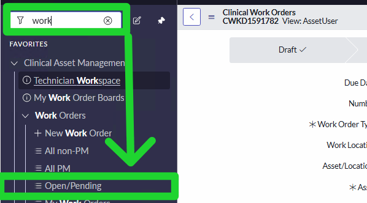
- Everyone’s screen will probably look different here. This is due to the fact that everyone may see different data depending on what filters are automatically applied to your account (VISN, Facility, etc.). That’s okay! To ensure you’ve landed on the correct page, at least confirm that the top of your page looks like this: 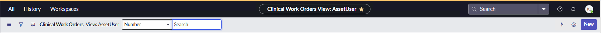
- In that image lies a very important button... any guesses?
- The filter button! Select the filter button 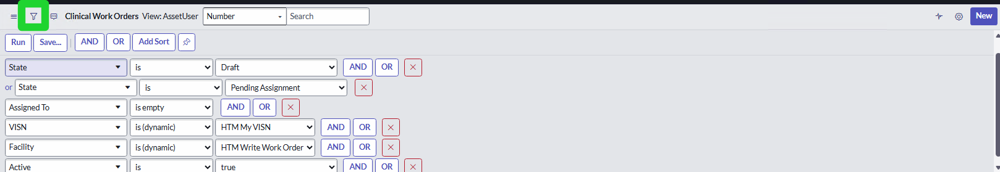
- Try playing around with different filter options to find the Work Order you just created
- Hint 1: The Work Order is ACTIVE
- Hint 2: The Work Order is very easy to find when you filter by WHO it is assigned to
- Hint 3: Don’t forget to select “Run” after your filters are applied!
- Find the Work Order you created and select it by clicking on the Number
Congratulations! You have now successfully created a Work Order, assigned a technician, learned how to apply filters, and found your Work Order.
I’m sure there are plenty of questions, so let’s spend some time answering any questions you guys have.
Lab 3: Preventative Maintenance
Part 1: Introduction to Preventative Maintenance
The good news about Preventative Maintenance within Nuvolo is that it is very similar to writing any style of Work Order! You may actually notice a large amount of overlap between this lab and Lab 2. You will have another chance create a Work Order; except this time we will exclusively be focusing on a Preventative Maintenance Work Order. Keep in mind, most of your PM Work Orders will NOT be manually created. But we will manually create one today to reinforce Work Order training, and to provide you insight into the details that make up a PM Work Order.
- Reference your Favorites Bar and in the Search Bar, type "Work Orders" 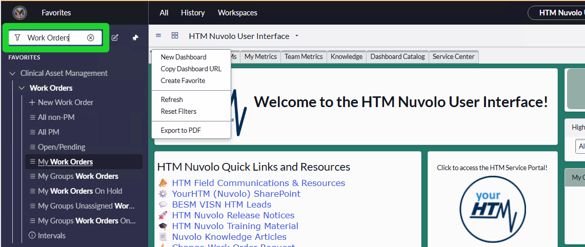
- Select “New Work Order” 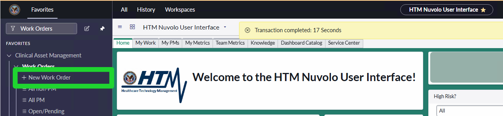
- This page should look familiar! We are back on a page that allows us to create a new work order. Reference the “Work Order Type” text field and select the magnifying glass icon 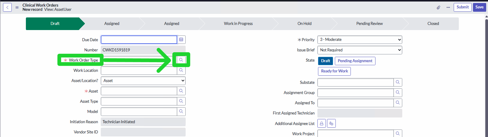
- For this work order, select “Preventative Maintenance” 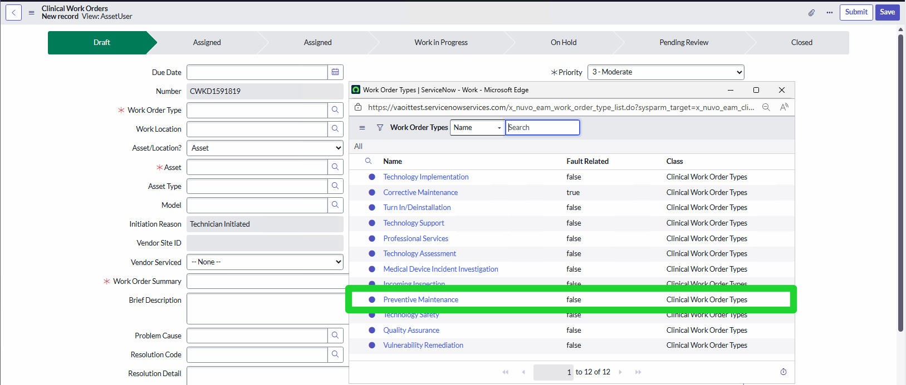
- From here, complete the following steps to finish Part 1 of the Lab:
- Select an Asset Type of your choosing
- Select a Due Date
- Select a Priority
- Complete the “Work Order Summary”
- Select “Draft” on the Work Order Form
- Record the “Assignment Group” that gets generated
- Record the “Assigned To” technician that gets generated
- Record the Work Order Number
- Congratulations! You have just created a Draft of a manually generated Preventative Maintenance Work Order. We’re far from done though… next, we need to be able to find and access this Work Order.
Part 2: Finding and Accessing Active PM Work Orders
- Reference your Favorites Bar. In the Search Bar, type “PM”

- Select “All-PM” 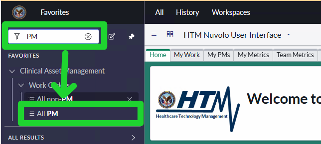
- Let’s take a look at the filters that come pre-assigned on the “All PM” page. 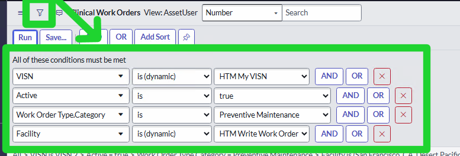
- These conditions are pre-assigned to this tab to help you easily find data and present you PM Work Orders based on your assigned role, facility, user permissions, etc.

Now that we've created a PM Work Order and discovered how to find them, let's recap some key information.
- In general, you will not need to manually create PM Work Orders. We manually created a PM Work Order in this lab to allow you more hands-on experience with Work Orders and to have a specific reference for follow-on lab use.
- Filters are a great way to find specific batches of data, to include Work Orders. Selecting the correct tab (in this instance, “All PM”) will come with pre-assigned filters to automatically show you data that applies to your specific Nuvolo account. If you want to alter the data that is being shown, feel free to play around with filters to meet your specific needs.
- The Global Search Function is the single best way to find specific data within Nuvolo. If you have a Work Order, Asset, etc. you can use the Global Search Function to reference that item
Part 3: What if Preventative Maintenance turns into Corrective Maintenance?
Okay close your eyes and picture this: You are scheduled to complete standard Preventative Maintenance on a piece of equipment. You start your PM check and realize that the equipment is broken and will require more work than the standard PM. What should you do?
- Ignore the problem
- Upgrade the PM Work Order to a Corrective Maintenance Work Order
Hopefully you selected number 2!
Let's walk through that scenario. Reopen the PM Work Order you created in Part 1 and Part 2 of this lab.
- Let's say work is In Progress for a PM Work Order. Make sure to double-click on the "Work in Progress" state to move the Work Order into that state. 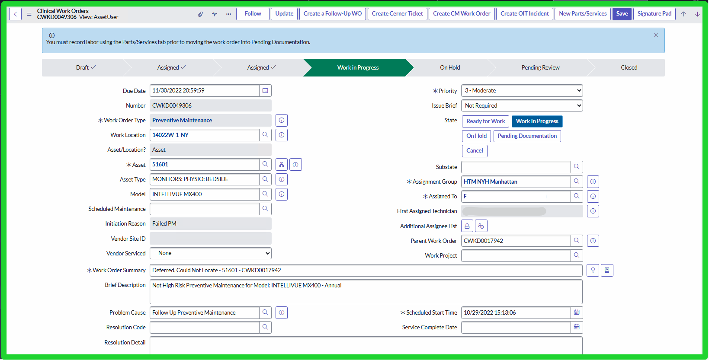
- There are two ways to elevate a PM Work Order to a CM Work Order. It is NOT recommended to use the "Create CM Work Order" button at the top of the page. Instead, we'll close the Work Order with the Resolution Code "Correct Action Required." This will automatically generate a CM Work Order AND close out the PM Work Order
- Scroll to the bottom of the page where you can set the "Resolution Code", "Service Complete Date", and "Resolution Detail". Fill in the "Service Complete Date" and add in some Resolution Details.

- >Select the "Resolution Code" dropdown and select "Corrective Action Required" 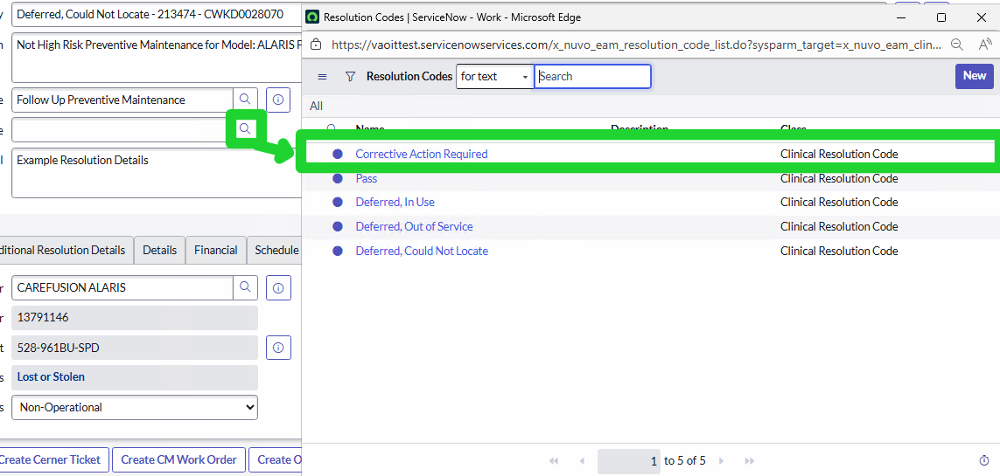
- Finally, double-click "Pending Docuementation" to close out the PM Work Order 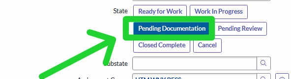
- Let's find our CM Work Order that was just created. 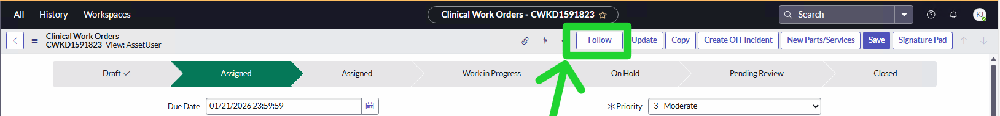
Now let’s say this entire Work Order has become a very high-visibility issue. As the technician, supervisor, etc. you want the ability to specifically follow this Work Order. It started as a standard PM, and now it’s a troublesome CM issue. You need continuous updates on this Work order.
- Reference the top of your page
- Select the “Follow” button
- You will get the following message on your Work Order page
- Now let's reference your notifications. Select the notifications icon (the bell)
- Confirm you see the following notifications tab:
- Use the settings icon to customize notifications as desired
Okay, maybe that felt like a lot! But now you know how to
- Manually generate a PM Work Order
- Find and filter for PM Work Orders (and any type of Work Order)
- Search for specific Work Orders via Global Search Function
- Elevate a PM Work Order to a CM Work Order
- Follow and track a Work Order
You're well on your way to being a Nuvolo pro!
Lab 4: Asset Management
Mostly everything we've talked about so far has been centered around Work Orders – how to create them, how to view them, how to upgrade them, etc. You're probably tired of talking about Work Orders. So let's move on to another core pillar of your day-to-day Nuvolo use: Asset Management. Asset Management is all about onboarding new medical devices, new parts, and new asset types. In this lab, we're going to walk through how to onboard a new device, how to reference that device, and any other fundamental techniques that will help you with asset management.
Part 1: Finding Equipment and Asset Management Familiarization
- Much like any other task on Nuvolo, let's start by referencing your Favorites Bar
- Type “Inventory” into your Search Bar
- Confirm you see the following menu:
- Let's pause for a moment and digest some of the options we have to help us perform Asset Management within Nuvolo. You have the ability to create new Asset Types (depending on your role and permissions), add new Part Types, add new devices, references parts and devices, view locations, verify compatibility, and much more.
- Let's start by clicking on "Models"
- You should see a list of data containing models, manufacturers, model numbers, and more.
- If you notice at the bottom of this page, you will see there are hundreds of thousands of results – not exactly helpful if you’re trying to reference specific equipment
- Here is where our filter button comes in handy. Click on the filter button at the top of the page
- Let’s say you only want to see equipment from a specific manufacturer – let’s assign filters to make that happen. Assign your filter to read: “Manufacturer” and “is”
- You now can look up equipment based solely on manufacturer. Let’s take a second to play around with these filter options. Explore the list of options and familiarize yourself with helpful data filters.
- Let’s quickly put your data filtering abilities to the test. Perform the following steps and record the Equipment Number
- You want to find a specific piece of equipment and you know the following information:
- Asset Type: CARTS: MEDICATION/STORAGE: POWERED
- Manufacturer: HOWARD MEDICAL
- Model Name: PARADIGM
- What is the equipment number?
- You want to find a specific piece of equipment and you know the following information:
- You should have gotten the number: CMOD0118262
- Now that you have a specific equipment number... let's say you wanted to access this equipment on Nuvolo again, but this time you know the exact equipment number... what feature could you use to directly search it?
- I hope you said... Global Search Function! Type in CMOD0118262 into your Global Search Function at the top of your browser
- Click "View Results"
- You should see the following page:
- Select the 1 result and you should see the following page:
- In this lab, we are only referencing this one particular piece of equipment that I randomly selected. But imagine you reference this page about equipment at your facility. On this page you should be able to see:
- Equipment Number
- Model Name
- Manufacturer
- Asset Type
- ID
- Price
- Compatibility
- Any relevant and useful information you would want to know about any piece of equipment
So now you've identified how to filter for different equipment, how to search specific equipment if you have the right number, and familiarized yourself with the functions of an equipment page.
Lab 5: Device Verification and PM Definitions
Part 1: Device Verification
Device Verification is a crucial task for Managers and Administrators within Nuvolo. This is a manual step that needs to occur in order to generate applicable Preventative Maintenance Work Orders. Performing proper device verification ensures that maintenance is being conducted within proper standards. Let’s walk you through the steps of how to manually verify those devices!
- Like the first step in all great Nuvolo activities, reference your Favorites Bar
- In the Search Bar, type “unverified devices”
- Select “Unverified Devices”
- Everyone’s page will look slightly different here – this page shows you a list of potentially unverified devices attached to your Nuvolo profile (based on facility, VISN, etc.) Take note of some of the column headers: Asset Tag, Asset Manufacturer, Asset Model Name, etc.
- We will need to ADD a very important column header. We are going to add “verified” as a column header to see the true/false value for whether or not these devices are verified. Click on the settings/gear icon in the top right of your browser
- Confirm you see the following pop-up
- In the “available” list (the list on the left side), scroll down until you see “Verified”
- Click on “Verified”
- After you have clicked on Verified, it should be highlighted in gray. Next, click the “>” icon to move it into the “selected” list (the list on the right)
- Then click “OK”
- Next, click on “verified” in the “selected” column and highlight it gray. Then click on the “^” icon to move it up the list until it is right above “Serial Number”
- Next, select “OK”
- Confirm you see a “verified” column
- Click on the first device on your list (it will be different than what mine is displaying). You can select the device by clicking on the “Asset Tag” number
- Confirm you see a page similar to this:
- Verify all information is correct – do not check the verified box if the information is incorrect.
- See slide deck
- Resources Tab specifically
- At minimum: All Groups need to be filled
- Call out Support Group top right
- Local discretion on specific person, but should be filled in during this lab
- Ignore Clinical Owner & Managed By & Business Schedule
- EHRM – Cerner Compatible. If it will someday connect to Cerner, then you should select this
- At minimum: All Groups need to be filled
- After verifying correct information, click the “Verified” check box
- Then click “update”
- Awesome, you have just verified a device! Now, this will automatically trigger and Incoming Inspection Work Orders or Preventative Maintenance Work Orders.
A few follow up questions:
- What tab could you use in your favorites bar to confirm that you just verified a device?
- The “device” tab
- What Function could you use to search that same device if you had the asset tag?
- Global Search Function
Part 2: Maintenance Definitions
Let’s talk about maintenance definitions – how to view them, create them, maintain them, and deactivate them. Maintenance definitions are critical for ensuring clinical devices are routinely inspected and maintain compliance.
- Let’s create a maintenance definition. Select “All” at the top of your browser (you may also use your Favorites Bar for this step)
- Search “Maintenance Definitions” in the Search Bar
- Select “Maintenance Definitions”
- Confirm you see the following page with the following pre-set filter:
- This page contains a list of all maintenance definitions under the pre-set filter “Facility… is (dynamic)… HTM Manage Devices.” To create a New Maintenance Definition, click “New” in the top right corner of the page
- Confirm you see the following page:
- Now I want you to create a maintenance definition for a specific Asset Model in a facility using some parameters listed below:
- Name: VISN # - TLA – Risk – Work Order Type – Model Name – Frequency
- Asset Condition: this sets the criteria for which devices will be covered by the definition – pick something applicable to you or your facility
- DO NOT USE “IS” - choose contains, starts with, ends with.
- IS has to be an exact match
- Schedule: the frequency of the definition that will apply to your device(s)
- Work Order Type: Preventative Maintenance is a good pick here – it makes sense to have a recurring frequency when it is based around PM definitions
- Generation Type: keep recurring selected – this will create a definition based on the schedule that is applied
- Work Order Summary: use the same exact thing you used for “Name”
- Start Date: use the first day of the month for any frequency of monthly or higher per national guidance
- Maintenance Source: Manufacturer or AEM based on compliance with TJC
- Facility: used for reporting purposes
- Asset Type: used for reporting purposes
- Model: used for reporting purposes
- Click Save at the top right when you’re done
- Once you have clicked “save” you will notice a new option to click “activate.” Click on “activate” once you are ready for the maintenance definition to go live
- Great! Now you’ve learned how to create maintenance definitions for various devices based on your asset conditions.
- Now let’s talk about managing these maintenance definitions… does anyone know the two scenarios in which a technician may need to manually generate a PM Work Order form a definition?
- New Asset without a matching definition
- New Activation
- To perform this, open an existing maintenance definition. Search “Maintenance Definitions” in your Favorites search bar
- Select “Maintenance Definitions”
- Select “New” at the top right of the browser
- You will need to create a second maintenance definition for the same asset conditions – but there will be one key difference with this maintenance definition. You want to manually generate a Work Order now... what field will be different than the last maintenance definition we created?
- If you guessed “Generation Type = Generate Now” then you were correct!
- Rather than a recurring set of preventive maintenance Work Orders on a recurring frequency, you will generate a one-time Work Order for the devices covered under your asset conditions.
- Try it out! Create the same exact Maintenance Definition, but instead of making it a recurring definition, make it a Generate Now definition.
Lab 6: Scheduling and Rates
Part 1: Technician Schedules
The last thing we will cover in this lab is creating a technician schedule. Each technician should have a main schedule. Let’s walk through the steps of creating a technician schedule.
- In your Favorites Search Bar, type “schedule”
- Select "Technician Schedule"
- Confirm you see the following page with the following pre-set filter:
- This is a list of all active technicians who have a created technician profile within Nuvolo
- In the top right of the page, let's click "New" to create a new schedule for a technician
- Confirm you see the following page:
- Let's create a new Clinical Technician Schedule using your name:
- Name: Your Name
- Technician: Your Name
- Schedule Type: Shift
- Description: VHA HTM Technician Class Test
- Now click submit
- You will be brought back to the list of all Technician Schedules. Using the search bar at the top of the page, search "Riley Brosnan"
- You should see the schedule you just created at the top of the list:
- Select “Riley Brosnan” and you should see the following page:
- Next, click the tab “schedule entries”
- Now click “New” to create a new schedule entry
- Fill out the following fields with the listed parameters
- Name: Riley's Monday - Friday
- Type: -- None --
- Show as: busy
- When: Today's Date and the work hours of your technician
- Repeats: Every Weekday (Mon-Fri)
- Repeat until: Leave Blank
- Type: Leave Blank
- Click Submit or Update (depending on whether this is a new record or an update to an existing schedule)
- Now you should see an added schedule entry under the technician's name:
- You have now created a regularly scheduled work week for your technician. This is crucial because it will allow your technician to be automatically assigned work orders throughout the week.
Part 2: Rates
Let's make sure you know how to accurately view and update your technician's pay rates within Nuvolo. This ensures proper record keeping to see how much labor cost is being put into specific devices. It will help make decisions on device maintenance and upkeep versus device replacement.
- Navigate to your Favorites Bar and search “rates”
- Select “Internal Employee Rates”
- This page will generate a list of technicians and information like their yearly pay, employee name, facility, locality, GS/step, and more. Let’s click on the filter button in the top left corner of the page
- Set your filters to any parameter that best helps you – for now, let’s use facility and filter to the Wilmington, DE facility
- Now you can see the yearly and hourly labor rate per employee. Again, this is helpful for reporting metrics – you can see how much labor cost goes into specific devices. But let’s say you need to add a new employee and enter their pay rate info. Select “New” at the top right corner of the page.
- Using me again, let’s create an employee rate using the following parameters
- Employee: Riley Brosnan (VHAHAMBROSNR)
- Position Entry Date: Today’s Date
- Fill in the rest of the information fields with information of your choosing
- Just note that you do want this information to be as accurate as possible for real-world application – when you make one of these records for an actual technician, ensure the labor rate, yearly pay, facility, locality, Grade, and Step are accurate
- Select “Save” or “Update” and you’re good to go!
That probably felt like a lot of information. We discussed a lot of admin responsibilities that will serve you well within Nuvolo. You learned how to create maintenance definitions, view and track employee rates, and create technician schedule entries. These are some core functions that will help you manage a team and devices within Nuvolo.